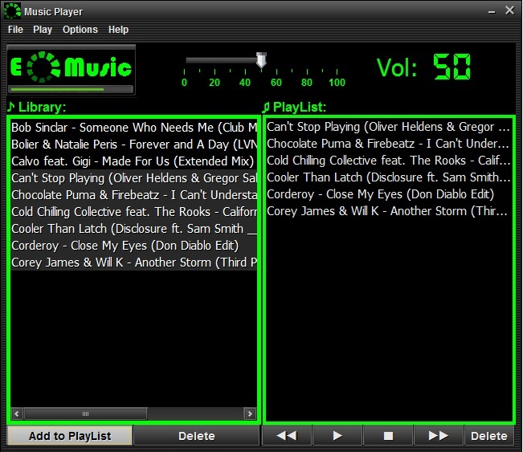

EII Music Player
EII Music Player es un reproductor de musica MP3 que permite tener la música en una librería. Así mismo, también se puede tener una PlayList
con las canciones que queramos importar desde la librería.

Las opciones del reproductor son las siguientes:
- Play: reproduce la canción seleccionada o la primera canción de la PlayList.
- Stop: finaliza la reproducción de las canciones.
- Rewind: reproduce la canción previa a la seleccionada
- Forward: reproduce la canción siguiente a la seleccionada
- Del: elimina la canción seleccionada de la PlayList